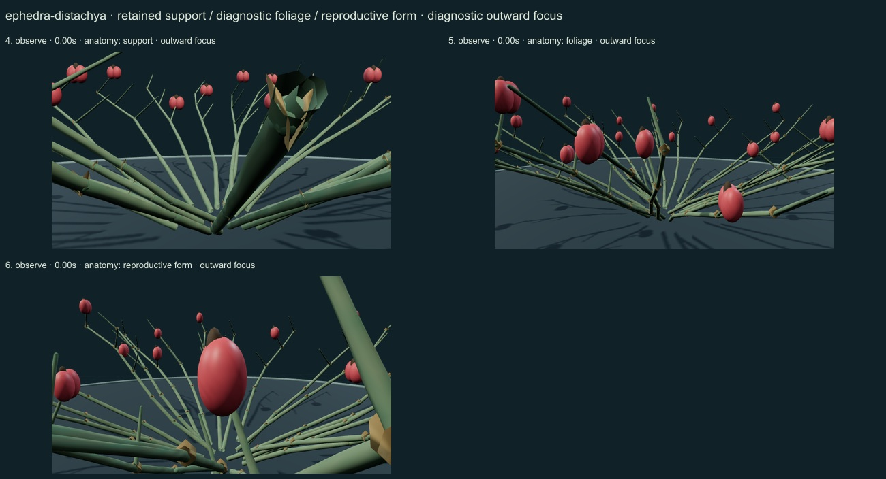
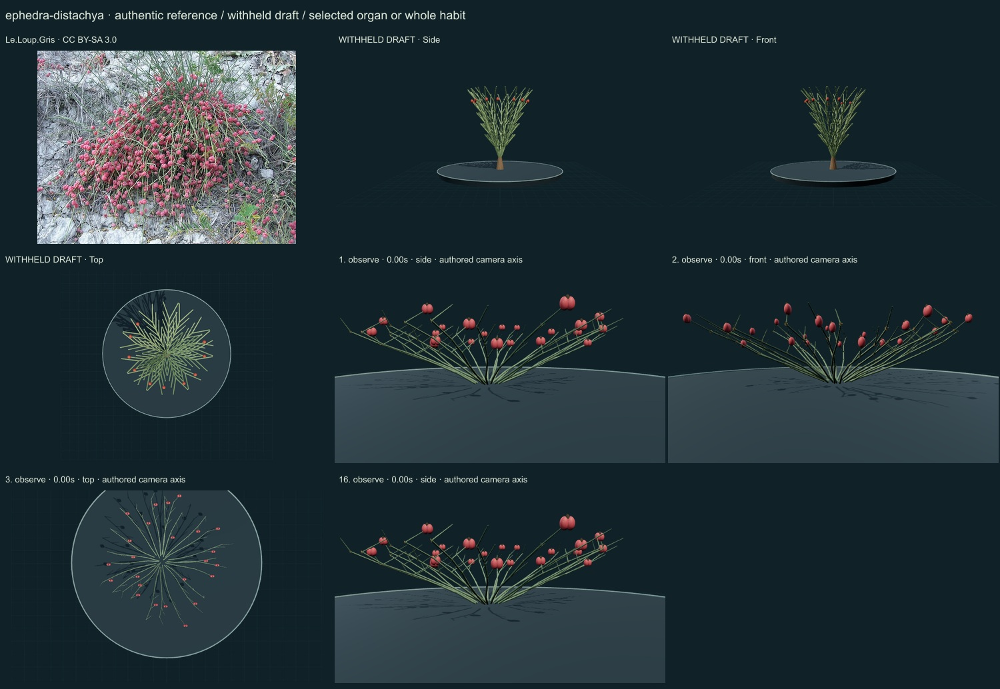
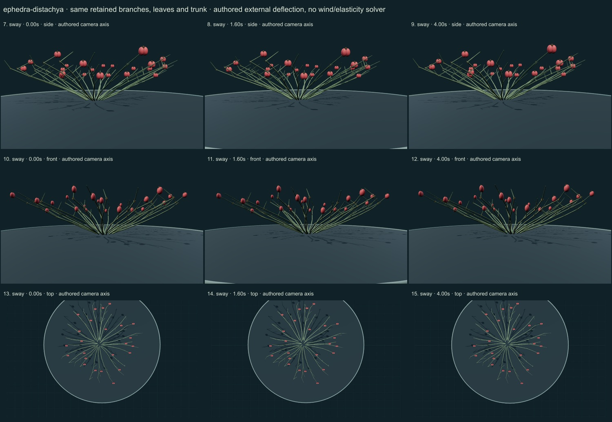

PhenoVoxel Archive · v0.6.24 · October 25, 2026
Joint pine
285 records after verified publication. 15 saved drafts remain held; 265 remain to 550, including 250 without a saved draft. Release register.
Selected Flora of China diagnosis through web retrieval: green jointed axes, reduced opposite connate scale leaves and red fleshy paired seed bracts. Source questions eastern versus European conspecificity; no model resolution of that complex is claimed.
Le.Loup.Gris · CC BY-SA 3.0. Source caption identifies historical subspecies monostachya at Saratov, Russia, a female plant with ripe cones. The archive counts only species Ephedra distachya; regional and infraspecific variation is not resolved. Resized inside 1000 px, flattened and JPEG encoded; no generative alteration.
Exact creator, license, source/download/local checksums and access scopes remain in the data. Additional copyrighted institutional photographs and primary figures were consulted privately and linked, not redistributed or sampled into materials.
A selected low branching female shrub has connected green internodes, explicit joints, opposite reduced scale-leaf pairs and selected red fleshy paired seed-bract cues with dark exposed seed regions. The stems supply the conspicuous green form.
Original numerical connected woody/green axes, individual curved leaf surfaces, subdued pigment variation and selected reproductive surfaces. No source photograph pixels or measured tissue optical parameters.
Remaining: Stem architecture remains sparse and radially regular compared with the dense authentic shrub. Bracts are smooth and stylized; exact bract fusion, seed exposure, internode dimensions and epidermal detail are unmeasured. Very close support focus clips a foreground stem at the camera near plane. Regional conspecificity is explicitly questioned in the consulted Flora of China; the match does not resolve that taxonomic issue. No seedling development or mechanical/physiological validation.
Same retained woody axes, rachises, leaves and reproductive surfaces during small authored external deflection. Root/support position and scale remain anchored. Timing and angles are qualitative; there is no wind/elasticity solver, physiological simulation or measured biomechanics. Complete germination, organ emergence and seed-to-adult development are unavailable; no resizing of a ready mature plant.
Partly stylized original educational reconstructions. Fine morphology, age variation, tissue optics, dimensions and environmental mechanics remain incomplete or unmeasured. No independent specialist validation, scientific certification or accuracy percentage. Software checks and screenshots do not establish biological validity.
16 actual nonblank final viewer states inspected on 3 labelled sheets. Side/front/top are authored whole-habit or selected-organ camera axes; outward focus is a separate diagnostic view. Qualitative author review, not independent scientific certification.



Partly stylized original educational reconstructions. Fine morphology, age variation, tissue optics, dimensions and environmental mechanics remain incomplete or unmeasured. No independent specialist validation, scientific certification or accuracy percentage. Software checks and screenshots do not establish biological validity. Prior 274 species objects and original wolf/tiger meshes unchanged. Occurrences and cultivated accessions are not native-range boundaries. Legacy Protista/Monera are reporting conveniences.
Exact findings, sources and screenshot hashes_2011_1.jpg){kind=link}